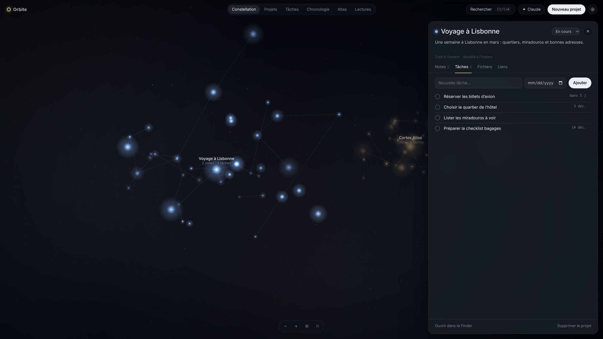

Windows
Windows 10 et 11, 64 bits
TéléchargerOrbite-Windows-Setup.exe · 3 Mo
Orbite range tes projets, tes notes et tes tâches dans un ciel vivant. Claude, ChatGPT ou une IA locale t'aident à les faire avancer, et tout reste sur ton ordinateur.
Une grosse mise à jour : trois assistants au choix, un tutoriel pour bien démarrer, et une app qui se met à jour toute seule.
En plus de Claude, ChatGPT peut créer tes projets, tes tâches et tes notes, préparer ton brief et résumer tes lectures.
Optionnelle et désactivée par défaut : une IA qui tourne sur ton ordinateur, sans clé ni abonnement. Rien ne quitte ta machine.
Affiche ou masque Claude, ChatGPT et l'IA locale dans les Réglages, et choisis ton assistant principal. Sans assistant, Orbite reste une app de projets complète.
L'app démarre vierge et te propose une visite guidée pour créer ta propre constellation, étape par étape. À revoir quand tu veux.
Quand une nouvelle version sort, Orbite te la propose et la télécharge en un clic. Plus besoin de revenir sur le site.
Une notification pour les tâches du jour, une sauvegarde complète en un clic, et l'app entière disponible en anglais.
Chaque projet est un amas d'étoiles. Plus il est vivant, plus il brille et se rapproche du centre.
Les projets actifs gravitent près du centre, les oubliés dérivent et passent en sommeil. Les projets liés sont reliés en pointillés.
Demande à ton assistant de créer un projet, d'ajouter des tâches ou d'écrire un point d'étape : il le fait directement.
Chaque jour : ce qui est en retard, tes trois priorités, et les projets à relancer.
Un raccourci, de n'importe quelle app : tu tapes une idée, elle atterrit dans le bon projet.
Des sessions de 15 à 50 minutes, et douze semaines d'activité pour voir où passe ton énergie.
Des notes en Markdown, liées entre projets. Glisse un article ou un PDF, Claude le résume.
Des panneaux en verre fumé au-dessus du ciel, et rien de superflu.




Gratuit, léger (moins de 10 Mo) et installé en quelques secondes. Un vrai installateur pour chaque système, sans rien à télécharger en plus.
Windows 10 et 11, 64 bits
TéléchargerMac à puce Apple ou Intel, macOS 11 ou plus
TéléchargerUbuntu, Kubuntu, Debian (.deb) · Fedora (.rpm)
Télécharger le .debsudo apt install ./Orbite-Linux.debsudo dnf install ./Orbite-Linux.rpmsk-ant-. Elle ne s'affiche qu'une fois.sk-.L'abonnement ChatGPT Plus ne suffit pas : comme pour Claude, l'API est un service séparé, facturé à l'usage.
Seulement pendant qu'elle répond : elle utilise alors 4 à 8 Go de mémoire. Sur un Mac récent (puce Apple) ou un PC avec 16 Go de mémoire, ça tourne bien ; avec 8 Go, c'est lent. C'est pour ça qu'elle est désactivée par défaut, et que tu choisis toi-même de l'activer.
Oui. Dans Réglages → Assistants, décoche « Afficher » pour Claude et ChatGPT et laisse l'IA locale désactivée. Les boutons et mentions disparaissent, et Orbite reste une app de projets complète.
Non. Les abonnements claude.ai (Pro, Max, Team) et l'API sont deux services séparés chez Anthropic. Orbite utilise l'API, qui demande sa propre clé et son propre crédit.
Orbite ne prend rien : tu paies directement Anthropic, à l'usage, sans abonnement. Une demande courante coûte en général quelques centimes, et moins avec les modèles plus légers. Tu peux fixer une limite de dépense mensuelle dans la console Anthropic (rubrique Limits) pour ne jamais avoir de surprise. Les tarifs à jour sont sur anthropic.com/pricing.
Tu peux changer de modèle à tout moment dans les Réglages.
Seulement ce dont ton assistant a besoin, et seulement quand tu l'utilises : ta demande et les éléments de projets concernés, envoyés à Anthropic (Claude) ou OpenAI (ChatGPT). Avec l'IA locale, ou sans assistant, rien ne quitte ton ordinateur. Orbite n'a ni compte, ni publicité, ni mesure d'audience. Tes clés sont chiffrées avec le trousseau de ton système.
De n'importe quelle application, appuie sur ⌥ Espace sur Mac ou Ctrl Alt Espace sur Windows et Linux. Une petite fenêtre s'ouvre : tape ton idée, valide, elle est enregistrée. Avec Claude, elle est rangée automatiquement dans le bon projet ; sans Claude, elle arrive dans la Boîte de réception. Pour que le raccourci marche tout le temps, coche « Ouvrir Orbite au démarrage de l'ordinateur » dans les Réglages.
Tes projets Claude deviennent des projets Orbite, et chaque conversation devient une note. Tu peux réimporter plus tard : rien n'est dupliqué.
Oui. Constellation, projets, notes, tâches, focus, chronologie, rappels et capture rapide fonctionnent sans aucune IA. L'assistant ajoute la création automatique, le brief rédigé et les résumés.
Dans Réglages → Mises à jour et aide → Revoir le tutoriel, ou en tapant « tutoriel » dans la recherche (⌘K ou Ctrl K).
Depuis la version 1.3, Orbite vérifie tout seul s'il existe une nouvelle version et te propose « Mettre à jour » : un clic télécharge et ouvre l'installateur. Tu peux aussi vérifier dans Réglages → Mises à jour, ou télécharger la nouvelle version ici et l'installer par-dessus l'ancienne. L'application est remplacée, tes projets dans Documents/Orbite restent intacts. Si tu viens de la version 1.1, colle à nouveau ta clé API dans les Réglages.
C'est le Contrôle intelligent des applications de Windows 11 : il bloque les logiciels qui ne sont pas encore signés par un éditeur reconnu. Tu peux le désactiver dans Sécurité Windows → Contrôle des applications et du navigateur. Attention, sur beaucoup de versions de Windows, on ne peut plus le réactiver ensuite sans réinitialiser Windows. Une version signée d'Orbite est prévue.
Depuis la version 1.2, Orbite est construit avec Tauri et Rust : il utilise le moteur web déjà présent sur ton ordinateur au lieu d'en embarquer un. L'application pèse moins de 10 Mo, démarre plus vite et consomme moins de mémoire.
Sur ton ordinateur, dans Documents/Orbite : un dossier par projet, et chaque note est un fichier .md normal. Tu peux les sauvegarder ou les synchroniser comme tu veux (iCloud, OneDrive, Nextcloud…).
Oui : pas d'abonnement, pas de publicité, pas de version payante cachée. Seul Claude, si tu l'actives, est facturé par Anthropic selon ton usage.
Windows : Paramètres → Applications → Orbite → Désinstaller. macOS : mets Orbite à la corbeille depuis Applications. Linux : sudo apt remove orbite (ou sudo dnf remove orbite). Tes projets dans Documents/Orbite sont conservés.
Non. Orbite est gratuit à utiliser, mais son code reste la propriété de son auteur. La copie, la modification et la redistribution sont interdites sans autorisation écrite. Les conditions complètes sont dans la licence.